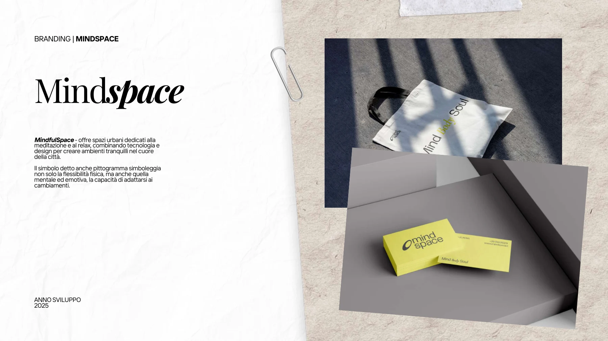
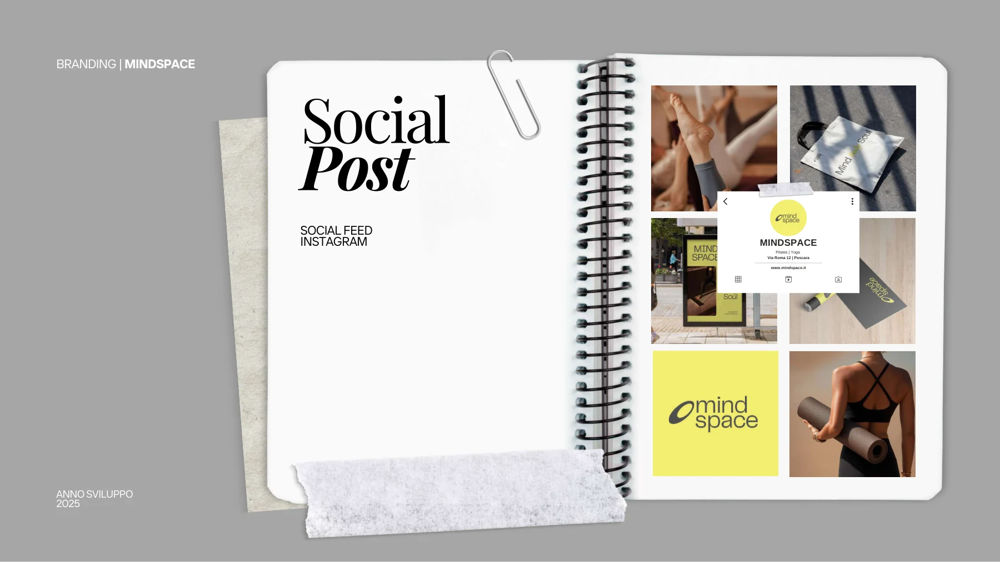
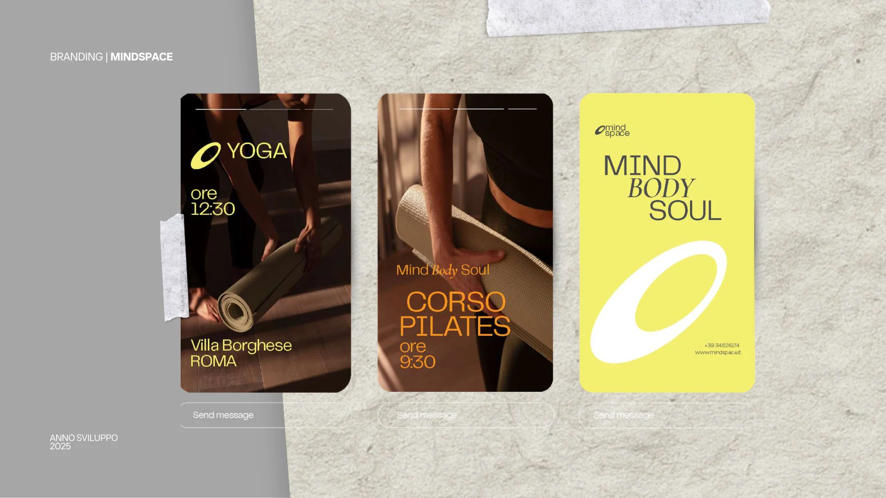
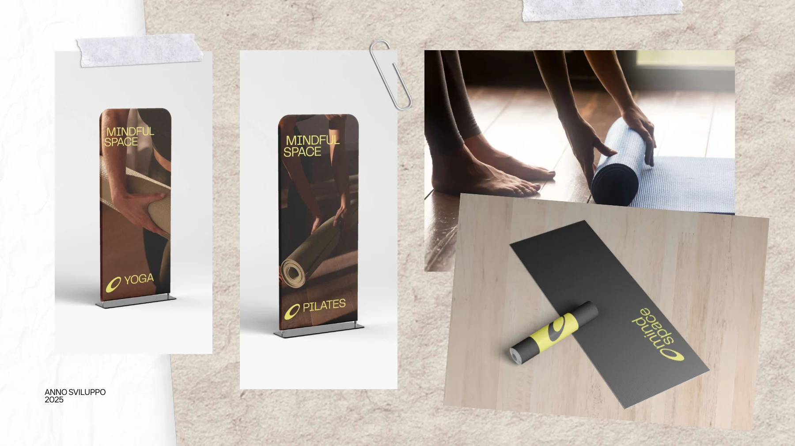
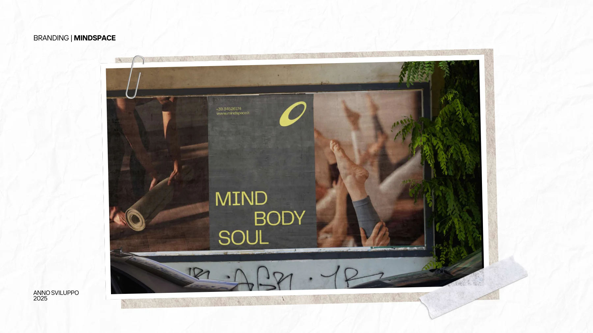

Mindspace
Un’identità visiva per un progetto dedicato alla meditazione e al relax negli spazi urbani.
Obiettivo
Rappresentare la flessibilità fisica, mentale ed emotiva attraverso un segno riconoscibile.
Attività documentate
Pittogramma e identità visiva, declinati su contenuti social, materiali digitali e applicazioni di comunicazione.





Progetto successivo